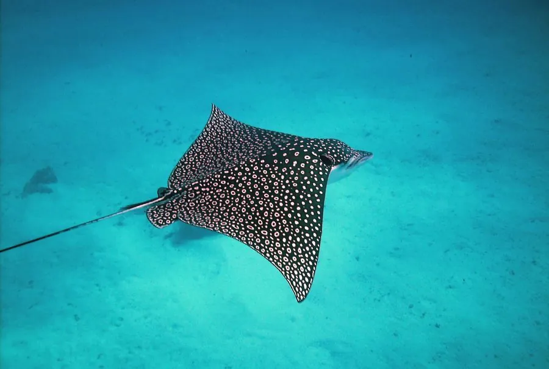

鱼类 · 动物界
鹰鳐 Aetobatus narinari

背部布满白色斑点、胸鳍宽阔如翼的鳐类，能跃出水面，常用吻部翻掘沙泥寻找贝类，分布于全球温暖海域。
- 分类
- 门脊索动物门纲软骨鱼纲目鲼形目科鹰鳐科属鹰鳐属
- 栖息环境
- 热带和亚热带浅海、珊瑚礁、沙地和河口
- 地理分布
- 全球热带和亚热带海域，包括太平洋、大西洋和印度洋
- 保护级别
- IUCN 濒危（EN）；中国未列入国家重点保护野生动物名录
物种志
鹰鳐体盘宽大扁平，胸鳍与头部相连，形似展开的翅膀；吻部突出，像鸟喙。体色背部深褐或黑色，密布白色斑点，腹部白色。体盘宽一般 1.5–2 m，最大可达 3 m，尾细长如鞭，尾基有毒刺。
鹰鳐分布于全球热带和亚热带海域，包括大西洋、太平洋和印度洋的沿岸及珊瑚礁区。它常成群或单独在沙底上方缓慢游动，用吻部翻掘沙泥，寻找贝类、甲壳类和蠕虫，坚硬的牙齿能咬碎贝壳。鹰鳐为卵胎生，每胎 2–6 尾。它有时会跃出水面，落水时发出巨响。由于渔业兼捕和栖息地退化，其种群受到压力，IUCN 将其列为濒危。它的尾刺带有毒液，潜水时需保持距离以免被误伤。
形态与习性
- 食性贝类、甲壳类、蠕虫和小鱼
- 体盘宽一般 1.5–2 m，最大可达 3 m
- 尾刺尾细长如鞭，尾基有 1 枚毒刺
- 繁殖卵胎生，每胎 2–6 尾
- 习性常用吻部翻掘沙泥寻找底栖猎物
- 活动会跃出水面，落水时发出巨响
趣味知识
- 鹰鳐的胸鳍像翅膀一样宽大，游动时姿态像在水中飞翔。
- 它常跃出水面，落水时发出很大的声响，原因尚无定论。
- 鹰鳐的牙齿像铺石一样排列，能咬碎坚硬的贝壳。